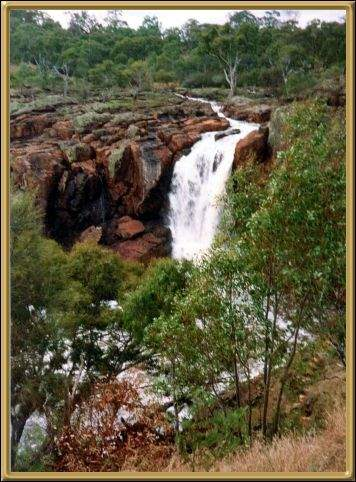

These falls are in the Grampians, which are massive sandstone ranges up in Western Victoria. Some of Victoria's most spectacular scenery is found through this area, and there are over 1000 different varieties of native ferns and flowering plants through the area. There are excellent bushwalking tracks and plenty of native wild-life Also, Aboriginal Rock art can be seen in the Western and Northern Grampians.
Photographer: Jean Stokes